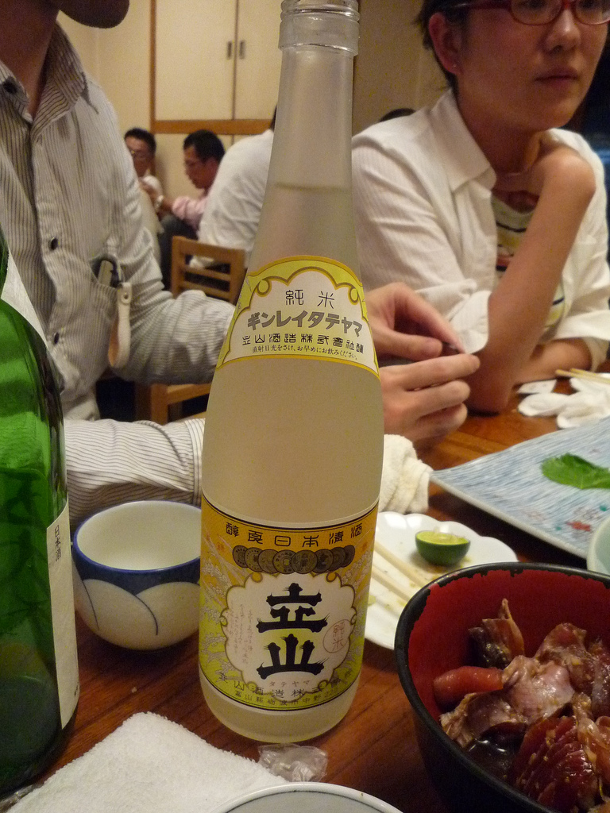
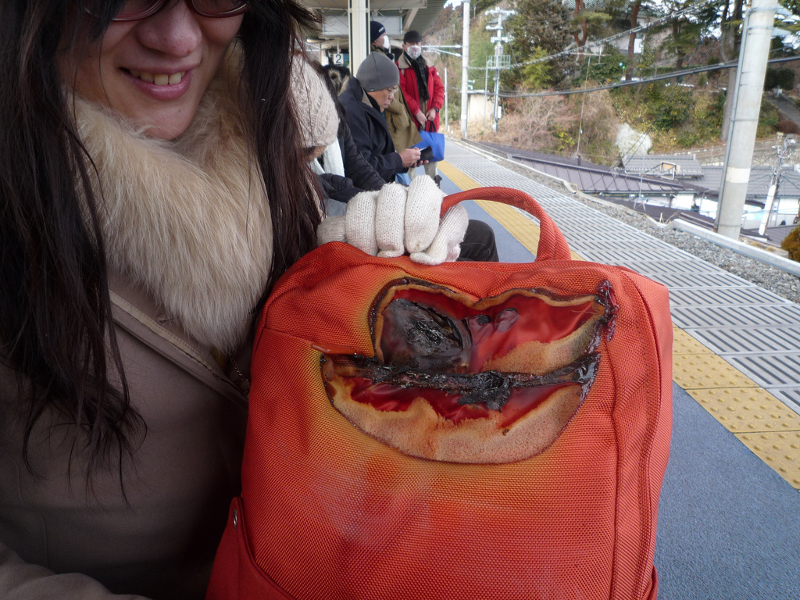
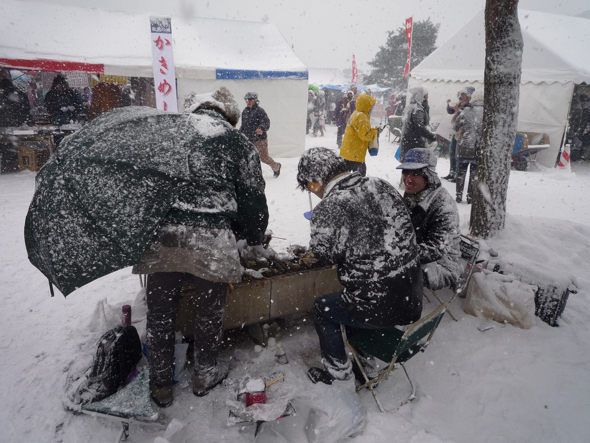
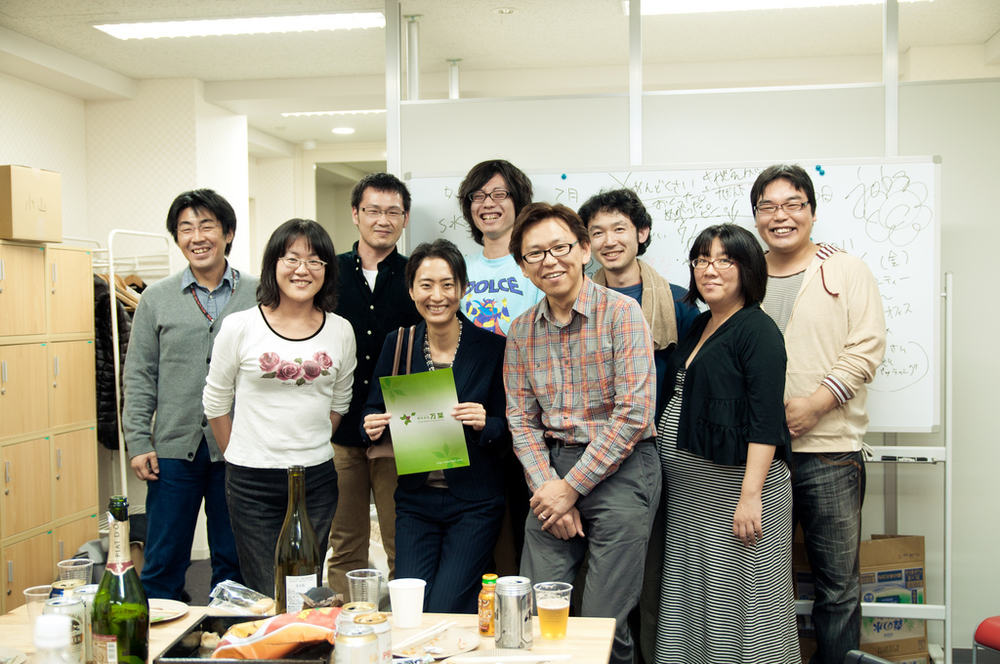

Document Generator Sphinx¶
Congratulations 6 anniversary¶
Sponsor¶
Who are You?¶

- Activity of Sphinx:
- Sphinx Maintainer, Sphinx-users.jp Chairman
- Python, XP, PyConJP 2012 Vice Chairman
- Along line
- Toei Shinjuku Sen
- Languages:
- C++/C/8086/Python/Rails/chef
I’m enjoying the AWAY feeling >_<¶
Ohba-san and Everyleaf and Me¶
Tsukiji Umaimonoya¶

Sendai Kaki Matsuri 2009¶

Sendai Kaki Matsuri 2010¶

Everyleaf relocation¶

Ohba-san and Everyleaf and Me¶
- At first, drinking pal
- その後万葉さんにRails仕事をお願いしたり、されたり
- そのときにSphinxをちょろっと紹介したり
Then,¶

Sphinxとは？¶
- ドキュメント生成のツール
- reStructuredText記法(Wikiっぽい?
- ページ間のリンクを自動生成
- 強力なコードハイライト
- 出力形式: HTML, PDF, ePub, htmlhelp, latex, man...
Sphinxの記入の例¶
Sphinxのサンプル
=================
Sphinxとは何か？
-----------------
* ドキュメント生成のツール
* reStructuredText記法(Wikiっぽい?
* ページ間のリンクを自動生成
* 強力なコードハイライト
* HTML, PDF, ePub, htmlhelp, latex, man...

Sphinx 1.2b1 Released¶
- 3/31に1年ぶりにリリース！
- 複数メンテナ体制で最初のリリース
- 国際化(i18n)機能の大幅強化
- マルチバイト言語対応強化
Sphinxの国際化(i18n)機能の強化¶
- 翻訳対象となっていなかった多くの箇所の対応
- 公式ドキュメント多言語化(進行中) Sphinx国際化機能の モデルケース
公式ドキュメント多言語化計画¶
日本語公式ドキュメントは今まで直接書き換えていました:
.. Available builders .. ================== 利用可能なビルダー ==================
今は翻訳を Transifex で行っています